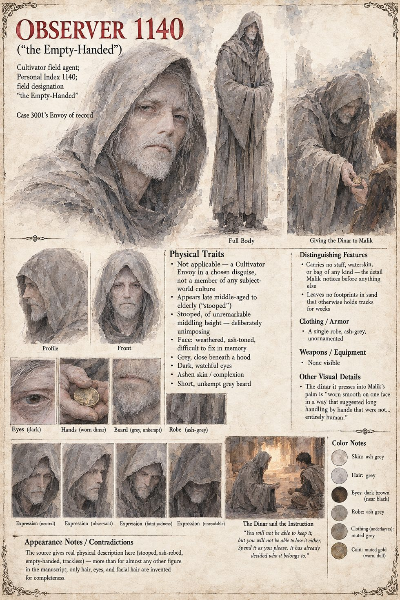

Observer 1140
Field designation “the Empty-Handed” · Personal Index 1140 · Cultivator Envoy of record, Case 3001 · his twentieth field posting · reassigned to Case 3014
A Cultivator field agent whose disguise in this case is a traveler who owns nothing: stooped, robed in something the color of old ash, carrying no staff, no waterskin and no bag, and leaving no track in sand that otherwise holds tracks for weeks. He comes down from the northern scarp two hours after dark and stands at the edge of Malik's firelight the way a man stands who has trained himself out of the habit of asking. He is fed the larger half of the shepherd's last meal, says almost nothing all night, and near dawn presses a dinar into Malik's palm with the only words he speaks: You will not be able to keep it, but you will not be able to lose it either. Spend it as you please. It has already decided who it belongs to. Malik will spend the better part of a decade unable to decide whether he dreamed him.
His voice is the Custodian Office's, in field notes that interrupt the story at the end of the first two parts. The first, written at baseline contact, rates Malik an ideal low-floor test case, one fixed asset class of livestock, no dependents and no formally acknowledged debt, and adds that the subject shared food he did not have enough of, which is noted for completeness and carries no evaluative weight. It then admits that Malik's verse, recited to his animals in the cadence of his dead father's debt-counting, moved him: I am not required to note that I found this, in a term my training does not strictly authorize me to use, moving. I have noted it anyway. The second note, written once the propagation has exceeded projections and become a war, says that he has been asked in nineteen earlier field postings to log outcomes considerably worse, and that he is not supposed to have one he returns to at rest: I do not know why it is this one.
The closing log is his as well. Its Primary Finding blames the culture's own evidentiary standards under stress, and its Closing Note then argues against the finding: that a single object dropped into a system already assessed as primed for cascading failure was never a passive act merely because no hand was raised afterward, and that raising the point appears to change nothing about how it is received. He flags Qasim's unprompted risk-assessment as convergent reasoning, records that Malik, outside every modeled terminal state for a baseline contact, lived to a natural old age and was apparently content, and notes that the trader Ibrahim ibn Nasr, the one subject no party thought to question, turns up thirty-four years later in a different file, Case 0202 (Observer 551). He is reassigned to Case 3014 with his personal notes sealed, at his own request, for longer than protocol requires, on the theory that the subject fed a stranger everything he had on the first night of the case, under a code that made the size of the debt no smaller for the stranger's silence since, and that an unusually complete record, however irregular, is the only repayment an Envoy is permitted to make.
The sheet notes that the manuscript gives real physical description here, stooped, ash-robed, empty-handed and trackless, more than for almost any other figure, and that only hair, eyes and facial hair are invented: a late middle-aged to elderly man of unremarkable middling height, with an ash-toned face that is difficult to fix in memory, grey hair close beneath a hood, dark watchful eyes, ashen skin and a short unkempt grey beard, in a single unornamented ash-grey robe with no visible equipment. Its expression panels run neutral, observant, faint sadness and unreadable.
“You will not be able to keep it, but you will not be able to lose it either. Spend it as you please. It has already decided who it belongs to.”